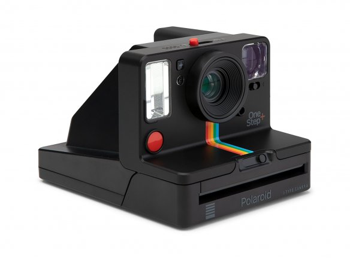
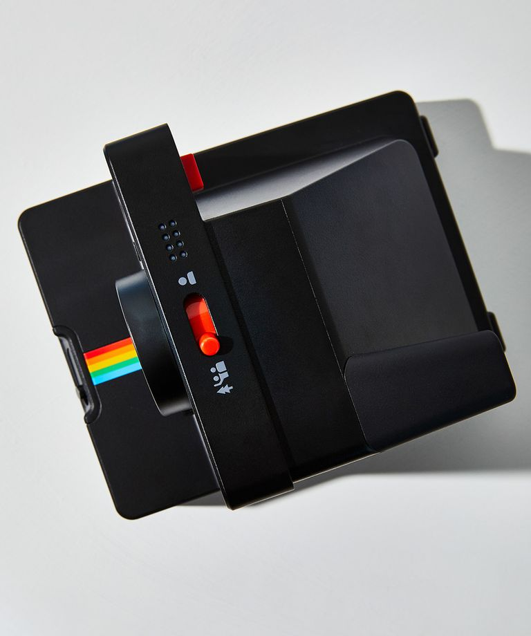
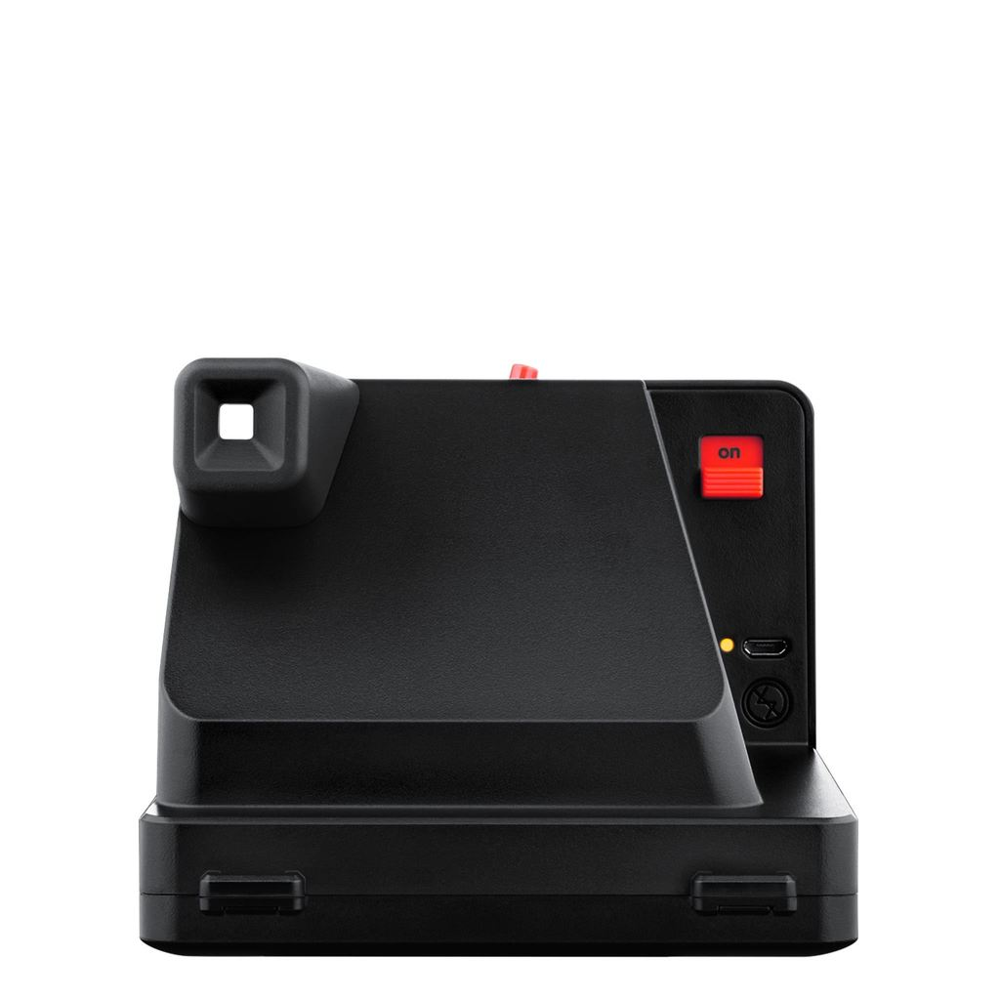
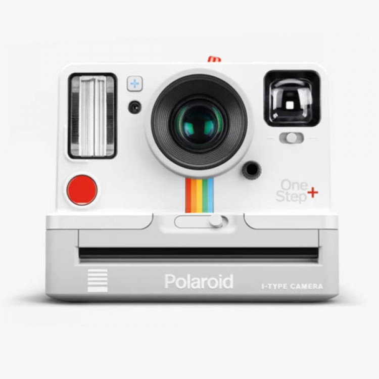

Полароид бывает 2-ух видов: белый и чёрный. На каждом полароиде посредине представлена культовая радужная полоса.
Лучшее в OneStep Plus- это то, что он имеет высокотехнологичные возможности, сохраняя при этом стиль и атмосферу ретро-полароида.
В Латвии Polaroid OneStep Plus стоит около 160-170 евро.



